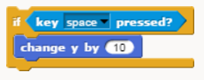

Do Now 3.3 Jumping¶
Follow link to a project with a dog that can move left and right in response to arrow keys. Make the following modifications to the code:
Program a walking animation for the dog. Hint: it has 2 costumes.
Add the code below to the forever block to make the dog “jump”. What is the problem with this jump code when you test it? How should jump work when the player presses the spacebar?

Program gravity by making a custom Motion block “gravity” and adding it inside the forever loop. In the “gravity” custom block use an if statement to implement gravity. Hint: If not touching ground or platform color, go down by a small amount.
Remember to save your work.